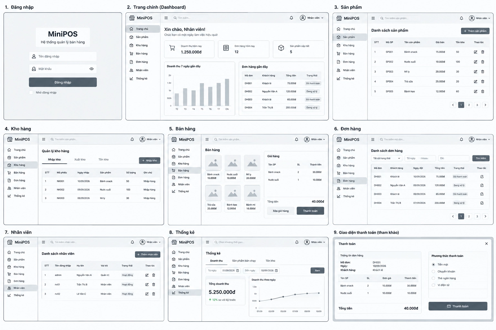

Sản phẩm
Quản lý thông tin và danh mục sản phẩm một cách rõ ràng, thuận tiện.
GIẢI PHÁP QUẢN LÝ BÁN HÀNG
Hỗ trợ quản lý sản phẩm, bán hàng và tồn kho hiệu quả.
Xem sản phẩmHệ thống MiniPos được xây dựng nhằm hỗ trợ cửa hàng quản lý sản phẩm, nhập xuất hàng, theo dõi tồn kho và tối ưu hóa quá trình bán hàng. Giao diện được thiết kế tối giản, giúp nhân viên thực hiện thao tác tính tiền nhanh chóng.

Đang tải dữ liệu thời tiết...
Quản lý thông tin và danh mục sản phẩm một cách rõ ràng, thuận tiện.
Hỗ trợ quá trình bán hàng, tính tiền và quản lý đơn hàng nhanh chóng.
Theo dõi số lượng hàng hóa và tình trạng tồn kho hiệu quả.